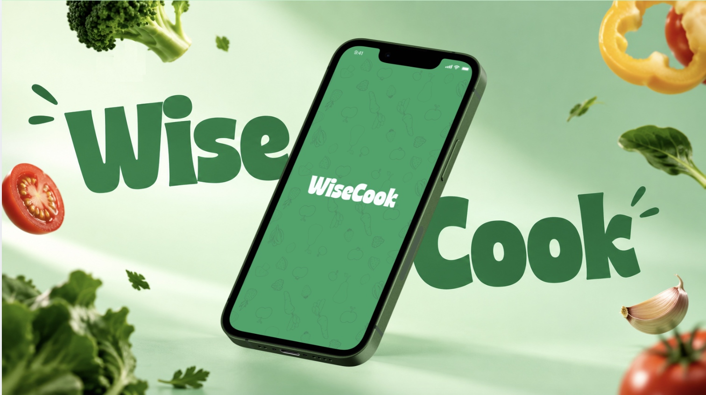
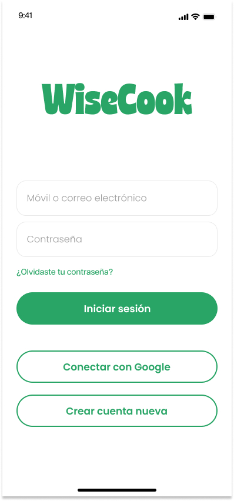

Sostenibilidad · Foodtech · Proyecto Académico
WiseCook
Ciudades frente al cambio climático
El punto de partida del proyecto fue una pregunta amplia: ¿cómo se pueden adaptar las ciudades y sus habitantes a los efectos provocados por el cambio climático? Investigamos distintos espacios de oportunidad y decidimos enfocarnos en el tema de alimentación, específicamente en el desperdicio de alimentos en los hogares.
De los datos globales a la encuesta propia
Realizamos investigación para comprender el problema del desperdicio de alimentos a nivel global, y desarrollamos una encuesta propia para obtener datos de primera mano sobre cómo ocurre el desperdicio dentro del hogar.
"Compremos con cuidado, cocinemos de forma creativa y hagamos que el despilfarro de alimentos sea socialmente inaceptable en cualquier lugar, al tiempo que nos esforzamos por ofrecer dietas sanas y sostenibles para todos."
UNEP Food Waste Index Report 2021 — Programa Ambiental de Naciones UnidasEducación, recuperación y sobreconsumo
Gracias a la encuesta identificamos las razones más constantes por las que los usuarios desechan alimentos en casa. A partir de ahí, redefinimos el reto desde el modelo de un sistema alimentario sostenible: consumo humano, recuperación de desperdicios y prevención del sobreconsumo mediante educación.
Definimos nuestro campo de acción en la intersección entre educación, recuperación y prevención del sobreconsumo — el espacio donde podíamos generar más impacto para disminuir el desperdicio de alimentos en los hogares.
¿Cómo crear conciencia y educar?
A partir del reto redefinido — ¿cómo podríamos crear conciencia, educar y disminuir el porcentaje de desperdicio de alimentos en los hogares? — diseñamos el concepto de WiseCook: una app que acompaña al usuario desde la despensa hasta el plato, combinando registro de alimentos, recetas, medición de impacto y educación continua.
Un sistema visual cálido y orgánico
Desarrollamos el logotipo, la paleta de colores, la tipografía y los recursos gráficos de apoyo de la marca — un sistema visual pensado para transmitir frescura, alimentos orgánicos y una experiencia amigable y educativa.
Partimos de un moodboard con ilustraciones editoriales de mercados orgánicos, libros de recetas infantiles y contenido vegano — referencias que guiaron un estilo amigable, ilustrado y cercano a la comida real, alejado de la estética clínica típica de las apps de salud.
Paleta de colores — versión clara
#1E5D3E
30, 93, 62
#29A566
41, 165, 102
#E8E970
232, 233, 112
#DFF9EB
223, 249, 235
Paleta de colores — versión oscura
#092A1B
9, 42, 27
#29A566
41, 165, 102
#687684
104, 118, 132
#FFFFFF
255, 255, 255
Tipografía
Onboarding
Poppins
Light · Medium · SemiBold · Bold · ExtraBold
Secciones
Articulat CF
Normal · Medium · Bold
Registro, educación y comunidad
El prototipo de alta fidelidad incluye tres pilares: registro de alimentos, recetas y medición del impacto personal; una sección de educación y foro para aprender y compartir con la comunidad; y "Mi impacto", donde el usuario visualiza cuánto desperdicio ha evitado.
Despensa digital
Registro de alimentos y su vida útil
Recetas inteligentes
Sugeridas según lo que hay en casa
Mi impacto
Medición del desperdicio evitado
Foro & educación
Comunidad y contenido educativo
Pantallas del prototipo



Wisemer — el complemento físico
Wisemer es el dispositivo inteligente diseñado para complementar la app, sincronizándose con la sección "Despensa". Su objetivo es mostrar el tiempo de vida, la etapa y la cantidad de productos orgánicos disponibles en tiempo real, sin que el usuario tenga que registrar todo manualmente.

Modelado 3D y renderizado del dispositivo Wisemer — realizado en Rhino
De la duda a la recomendación
Mapeamos el recorrido completo del usuario en cinco fases, desde que percibe el problema del desperdicio hasta que recomienda la app a otras personas — identificando acciones y estado emocional en cada etapa.
Conciencia
Revisa la nevera y reflexiona sobre el desperdicio de comida.
Impresionado y desilusionadoDescubrimiento
Investiga alternativas y descarga la app.
Curioso y motivadoAprendizaje
Ve el tutorial y completa su perfil con las unidades de medida.
Preocupado, luego motivadoUso
Cocina su primera receta y sigue el feedback de la app.
Agobiado, luego confiadoEngagement
Reduce su desperdicio, recomienda la app y habla del tema con más gente.
Feliz y entusiasmadoExplora el prototipo
El prototipo navegable completo, hecho en Figma, incluye los flujos de onboarding, despensa, recetas y "Mi impacto".
Video de interacción
Un proyecto de equipo, un rol transversal
Dentro de un equipo de 5 diseñadores, mi participación abarcó investigación, ideación de propuestas, diseño (modelado 3D, renderizado y mockups) e ilustración. El proyecto se realizó bajo la tutela de Juan Carlos Díez, Álvaro Millán y Jonatan Morquecho.
Research
Ideación & propuestas
Modelado 3D & renderizado
Ilustración